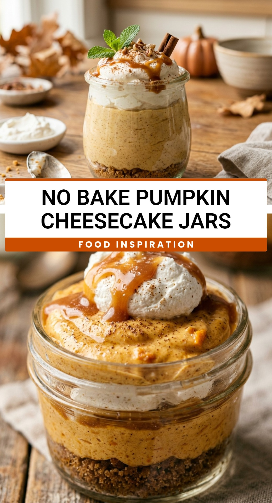

No Bake Pumpkin Cheesecake Jars
October 1, 2026

Fall is officially here, and there is no better way to celebrate the season than with a creamy, spiced dessert that requires absolutely no oven time. These No Bake Pumpkin Cheesecake Jars are the ultimate autumn treat. They offer all the rich flavor of a traditional pumpkin cheesecake but in a convenient, portable, and perfectly portioned format. Whether you are hosting a Thanksgiving dinner or just want a cozy weeknight snack, these jars are sure to impress everyone at the table.
Recipe Information
Prep Time: 20 minutes
Cook Time: 0 minutes
Total Time: 20 minutes
Servings: 6 servings
Difficulty Level: Easy
Nutrition Information
Calories per serving: 345 kcal
Protein: 4g
Carbohydrates: 38g
Fat: 21g
Fiber: 2g
Sugar: 24g
Sodium: 290mg